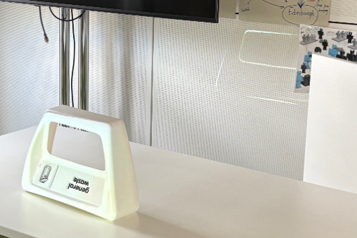
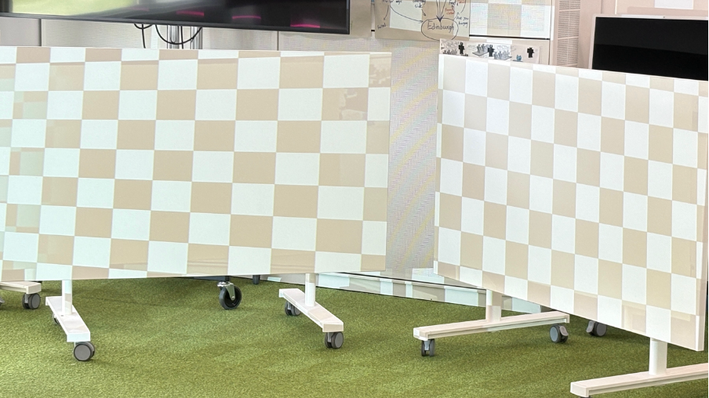

In this week’s workshop on Projection Mapping, I systematically explored for the first time how to precisely map static images, videos, or real-time animations onto physical surfaces. The session not only enabled me to master software operation skills but also deepened my understanding of the profound potential of projection mapping in spatial visualization, interactive design, and multimedia art.

Projection mapping is a technology that uses digital software to accurately fit images onto the surfaces of real-world objects. It can be applied in architectural performances, stage shows, exhibition installations, and even interactive games. Compared with traditional projection, projection mapping places more emphasis on the shape registration between images and real-world structures, as well as the creation of visual illusions.
Through explanations and demonstrations, I have mastered the following key technical links:
- Photographing for Material Collection: Using on-site photos as the base image for content mapping and positioning.
- Corner Pin Calibration: Dragging the four corners of the image to the boundary of the target plane to match the projection area.
3. Projector Position Optimization:
- The farther the distance, the more stable the projection and the less shadow interference.
- Avoid projecting from the bottom up as much as possible; inverted projection is more suitable for interactive displays.
- Mask Processing: Using black-and-white mask images to precisely control the target area, which can be overlapped with visual effects such as particle systems.

5. Mapping to 3D Models:
- Models in formats like .obj/.fbx can be loaded into tools such as Blender to generate matching masks.
- Software supports include VVVV, TouchDesigner, MadMapper, HeavyM/Resolume, etc.
- Spout/Syphon: Serving as a video stream channel between multiple software to import real-time content into the mapping system.
What interested me the most was when the lecturer mentioned that perfection isn’t always the goal, sometimes misalignment can be more aesthetic and dramatic. For example:
- Using Perspective Mapping to create 3D illusions;
- Projecting from the side to make images “distort” into a three-dimensional effect before the audience;
- Using MediaPipe to achieve dynamic human masks for interactive occlusion or tracking.
This design concept of beauty in imperfection has overturned my obsession with precise mapping and expanded my understanding and imagination of illusory spaces in future creations.
Reflection
Through this course, I’ve started to consider how to apply Projection Mapping to my other projects, especially in creative approaches that integrate spatial narrative, physical interaction, and data visualization. In the future, I hope to explore:
- Projecting real-time sensor data as “breathing light and shadow” in interactive installations;
- Combining projection mapping with touch feedback in exhibitions to create immersive educational experiences;
- Using Blender + TouchDesigner to preset complex structural projection layouts, then mapping them onto installations to achieve “navigable” interactive spaces.